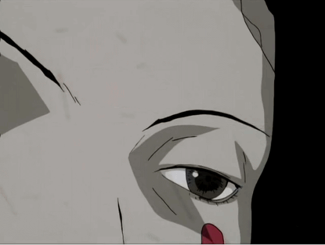

IV – Religion
Summary
Lain is contacted by Masami Eiri, a scientist who claims to be god in the Wired Strange network phenomena escalate, and Lain becomes a GOD
Key Theme
Digital Divinity
The Wired is connecting to the reality. Does God exist at least in the NET?
Moment
" The Wired is everywhere. And I am God "

—Eiri